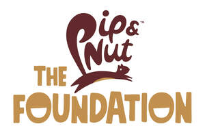

Trade Mark Journal No.2025/045 7 November 2025
UK00004286269 29 October 2025 (29,30,35,36,41,42,44)
Mark 1
Mark 2

- Class 29
- Meat, fish, poultry and game; Meat extracts; Preserved, frozen, dried and cooked fruits and vegetables; Jellies, jams, compotes; Eggs; Milk and milk products; Edible oils and fats; milk; milk products; milk substitutes; butter substitutes; vegetable-based milk substitutes; almond milk; cheese; butter; margarines and spreads; nut butters; tofu; creamed coconut; tahini; hummus; pates and spreads; coconut milk-based beverages; almond milk-based beverages; peanut milk-based beverages; snack bars, namely nut based food bars; savoury snacks, namely nut based food bars; coconut milk; oils for food; blended oil for food; nut oils for culinary purposes; fruit and vegetable spreads; dairy spreads; spreads consisting of hazelnut paste; edible fat-based spreads for bread; nut butter; honey butter; coconut butter; blanched nuts; cashew nuts (prepared -); dried nuts; roasted nuts; flavoured nuts; flaxseed oil for culinary purposes; ground almonds; ground nuts; hazelnuts, prepared; nut-based snack foods; nuts being cooked; nuts being preserved; organic nut and seed-based snack bars; prepared almonds; prepared nuts; prepared pistachios; prepared pine nuts; prepared walnuts; preserved nuts; processed almonds; roasted peanuts; salted nuts; salted cashews; seeds, prepared; snack foods based on nuts; nut oils; groundnut oil; peanut milk for culinary purposes; peanut oil for food; sesame oil; milk of almonds for culinary purposes; savoury butters; butter preparations; concentrated butter; blended butter; butter oil; nut-based spreads; nut paste spreads; butter made of nuts; butter (peanut -); almond butter; cashew nut butter; seed butters; chocolate nut butter; cocoa butter; processed nuts; peanut spread; peanut butter; hazelnut spread; yoghurts; nut milks; flavoured edible oils; nut oils for food; coconut oil; dried goji berries.
- Class 30
- Coffee, tea, cocoa and artificial coffee; Rice; Tapioca and sago; Flour and preparations made from cereals; Bread, pastries and confectionery; Edible ices; Sugar, honey, treacle; Yeast, baking-powder; Salt; Mustard; Vinegar, sauces [condiments]; Spices; Ice; porridge oats; bread and bread products; foods produced from baked cereals; foods produced from puffed cereals; food preparations made from alimentary pastes and popcorn; flour and preparations made from cereals; bread; pastries; cookies; honey; yeast; mustard; vinegar; sauces; boiled sweets; cereal food bars; chocolate bars; chutneys; herb teas; crispbread; flapjacks; marinades; marzipan; muesli bars; cakes; pies; tarts; pasties; beverages contained in this class, namely, chocolate beverages, cocoa beverages, tea beverages and coffee beverages; canned sauces; breakfast cereals; cereal based snacks; salad dressings; muesli; candy bars; puffed rice; cereals and preparations made from cereals; flavourings of almond; flavourings of almond for food or beverages; flavourings of almond, other than essential oils, for food or beverages; sauces containing nuts; sauces flavoured with nuts; nut flours; roasted and ground sesame seeds; flavourings for butter; food flavourings, other than essential oils; almond flavourings, other than essential oils; essences for cooking [other than essential oils]; confectionery bars; almond confectionery; nut confectionery; coated nuts [confectionery]; chocolate spreads containing nuts; chocolate coated macadamia nuts; sandwich spread made from chocolate and nuts; cereal products in bar form; high-protein cereal bars; granola-based snack bars; snack bars containing a mixture of grains and nuts and dried fruit [confectionery]; popcorn; flavoured popcorn; popped popcorn; glazed popcorn; caramel coated popcorn with candied nuts; sugared almonds; peanut butter confectionery chips; spreads made from chocolate and nuts; peanut confectionery; almond paste; herb salt; relishes; dried herbs.
- Class 35
- Advertising; Business management; Business administration; Office functions; arranging promotion of charitable fundraising events; Promoting public awareness of, and the need to support, social and economic development in disadvantaged communities; Promoting public awareness of community organizations; Providing on-line information to individuals about volunteer programs, neighborhood service projects, neighborhood improvement projects, and social and economic development in disadvantaged cities, for the purpose of making donations to charities; Sales promotion; Publicity and sales promotion; Providing information concerning commercial sales; Sales promotion using audiovisual media; Sales promotion services for third parties; Sales promotion through customer loyalty programs; Business administration services for processing sales made on the internet; Sales promotion for others by means of privileged user cards; Distribution of publicity materials (flyers, prospectuses, brochures, samples, particularly for catalogue long distance sales) whether cross border or not; Promoting the goods and services of others through the administration of sales and promotional incentive schemes involving trading stamps; retail services relating to food; providing consumer product information relating to food or drink products; providing consumer product information via the internet; commercial information services, via the internet; retail services in relation to food cooking equipment; mail order retail services related to foodstuffs; retail services connected with the sale of spreads and pastes; retail services connected with the sale of snack foods; retail services connected with the sale of snack bars; retail services connected with the sale of cereal bars; retail services connected with the sale of condiments; organisation, operation and supervision of loyalty and incentive schemes; retail and online retail services connected with the sale of meat, fish, poultry and game, meat extracts, preserved, frozen, dried and cooked fruits and vegetables, jellies, jams, compotes, eggs, milk and milk products, edible oils and fats, milk, milk products, milk substitutes, butter substitutes, vegetable-based milk substitutes, almond milk, cheese, butter, margarines and spreads, nut butters, tofu, creamed coconut, tahini, hummus, herb salt, pates and spreads, relishes; retail and online retail services connected with the sale of coconut milk-based beverages, almond milk based beverages, peanut milk-based beverages, snack bars, savoury snacks, dried herbs, coconut milk, oils for food, blended oil for food, nut oils for culinary purposes, fruit and vegetable spreads, dairy spreads, spreads consisting of hazelnut paste, edible fat-based spreads for bread, butter, nut butter, honey butter, coconut butter, blanched nuts, cashew nuts (prepared -); retail and online retail services connected with the sale of dried nuts, roasted nuts, flavoured nuts, flaxseed oil for culinary purposes, ground almonds, ground nuts, hazelnuts, prepared, nut-based snack foods, nuts being cooked, nuts being preserved, organic nut and seed-based snack bars, prepared almonds, prepared nuts, prepared pistachios, prepared pine nuts, prepared walnuts, preserved nuts, processed almonds, roasted peanuts, salted nuts, salted cashews; retail and online retail services connected with the sale of seeds, prepared, snack foods based on nuts, nut oils, groundnut oil, peanut milk for culinary purposes, peanut oil for food, sesame oil, milk of almonds for culinary purposes, butter substitutes, savoury butters, butter preparations, concentrated butter, blended butter, butter oil, nut-based spreads, nut paste spreads, butter made of nuts, butter (peanut -), almond butter, cashew nut butter, seed butters; retail and online retail services connected with the sale of chocolate nut butter, cocoa butter, ground nuts, processed nuts, prepared nuts, peanut spread, peanut butter, hazelnut spread, spreads consisting of hazelnut paste, yoghurts, coffee, tea, cocoa and artificial coffee, rice, tapioca and sago, flour and preparations made from cereals, bread, pastries and confectionery, edible ices, sugar, honey, treacle, yeast, baking-powder, salt, mustard, vinegar, sauces [condiments]; retail and online retail services connected with the sale of spices, ice, porridge oats, bread and bread products, foods produced from baked cereals, foods produced from puffed cereals, food preparations made from alimentary pastes and popcorn, flour and preparations made from cereals, bread, pastries, cookies, honey, yeast, mustard, vinegar, sauces, boiled sweets, cereal food bars, chocolate bars, chutneys, herb teas, crispbread, flapjacks, marinades, marzipan, muesli bars; retail and online retail services connected with the sale of cakes, pies, tarts, pastries, pasties, beverages contained in this class, canned sauces, breakfast cereals, cereal based snacks, salad dressings, muesli, candy bars, puffed rice, cereals and preparations made from cereals, flavoured edible oils, nut oils for food, coconut oil, flavourings of almond, flavourings of almond for food or beverages; retail and online retail services connected with the sale of flavourings of almond, other than essential oils, for food or beverages, sauces containing nuts, sauces flavoured with nuts, nut flours, roasted and ground sesame seeds, flavourings for butter, food flavourings, other than essential oils, almond flavourings, other than essential oils, essences for cooking [other than essential oils], confectionery bars, muesli bars, almond confectionery, nut confectionery; retail and online retail services connected with the sale of coated nuts [confectionery], chocolate spreads containing nuts, chocolate coated macadamia nuts, sandwich spread made from chocolate and nuts, cereal products in bar form, high-protein cereal bars, granola-based snack bars, snack bars containing a mixture of grains and nuts and dried fruit [confectionery], dried goji berries, popcorn, flavoured popcorn; retail and online retail services connected with the sale of popped popcorn, glazed popcorn, caramel coated popcorn with candied nuts, sugared almonds, peanut butter confectionery chips, spreads made from chocolate and nuts, peanut confectionery, almond paste; information, consultancy and advisory services relating to all the aforesaid services.
- Class 36
- Financial, monetary and banking services; Philanthropic services concerning monetary donations; Arranging business fundraising activities; Arranging charitable collections [for others]; Arranging charitable fundraising events; Arranging charitable fundraising activities; Arranging of financing for humanitarian projects; Arranging of funds for overseas aid projects; Benevolent fund services; Charitable collections; Charitable fund raising services; Charitable services, namely financial services; Financial sponsorship; Organising of charitable collections; Fundraising and financial sponsorship; Providing information relating to charitable fundraising; Providing monetary grants to charities; Providing project grants for environmental and health awareness projects; Provision of charitable fundraising services in relation to carbon offsetting; financial grant services; Investment of funds for charitable purposes; Distributing of charitable financial awards and grants to others; information, consultancy and advisory services relating to all the aforesaid services.
- Class 41
- Education; Providing of training; Entertainment; Sporting and cultural activities; Arranging and conducting of entertainment events for charitable purposes; Arranging and conducting of sports events for charitable purposes; Arranging and conducting of educational events for charitable purposes; Practical training services; Organisation of training courses; Training and education services; Business training; Sales training services; Conducting training seminars; Training in communication techniques; Training in business management; Arranging of exhibitions for training purposes; Arranging professional workshop and training courses; Training of personnel in food technology; Training in the display of food; Training in the handling of food; Training services relating to retail management; Educational services relating to sales training; Publication of educational and training guides; Conducting training courses relating to nutrition online; Conducting training courses relating to diet online; Staff training services relating to the retail trade; Providing of training in the field of health care and nutrition; Organising and providing conferences, congresses, exhibitions, seminars and symposiums for educational purposes; electronic publication services; providing digital music and films from the internet; Entertainment services in the nature of radio and television news and informational programmes; Educational services relating to sales training; training servies relating to retail marketing; information, consultancy and advisory services relating to all the aforesaid services.
- Class 42
- Environmental advice; Provision of scientific information in the field of climate change; Collection of environmental information; Scientific research in the field of environmental protection; Compilation of information related to environmental conditions; Provision of technological information on environmentally conscious and green innovations; Environmental testing; Environmental impact assessment services; Consultancy related to environmental protection; Environmental testing and environmental inspection services; Environmental testing for detection of pollutants in water; Climate change research; Consultancy related to pollution control; Laboratory services; Scientific and technological services; Industrial analysis and industrial research services; Testing, authentication and quality control; Health research; Food research; Testing of foodstuffs; Professional advisory services relating to food technology; Quality control relating to the hygiene of food; Research and development services in the field of food; information, consultancy and advisory services relating to all the aforesaid services.
- Class 44
- Medical services; Agriculture, aquaculture, horticulture and forestry services; Nutrition counselling; Pharmaceutical counselling; Public health counselling; Health risk assessment studies; Agricultural, horticultural and forestry counselling; Agricultural services; Medical analysis services; Health services; Charitable services, namely providing medical services; Charitable services, namely, providing medical services to needy persons; food nutrition consultation; information, consultancy and advisory services relating to all the aforesaid services.
Pip & Nut Ltd
Representative: Stobbs